Load libraries
source("code/setup.R")Reducing dimensionality using principal component analysis (PCA) dates back to Pearson (1901) and Hotelling (1933). The goal is to find a smaller set of variables, \(q (< p)\), that contain as much information from the original as possible. The new set of variables, known as principal components (PCs), are linear combinations of the original variables. The PCs can be used to represent the data in a lower-dimensional space. Jolliffe & Cadima (2016) provides a contemporary review of the century of developments in PCA.
The process is essentially an optimisation procedure, although PCA has an analytical solution. It solves the problem of
\[ \max_{a_k} ~\text{Var} (Xa_k), \] where \(X\) is the \(n \times p\) data matrix, \(a_k (k=1, ..., p)\) is a 1D projection vector, called an eigenvector, and the \(\text{Var} (Xa_k)\) is called an eigenvalue. PCA is a sequential process: you first find the projection that captures the most variance, then you find a projection that is orthogonal to the first axis that captures the most variance in the \((p-1)\)-dimensional space, then you find a projection that is orthogonal to the first two axes that captures the most variance in the \((p-2)\)-dimensional space, and so on. The eigenvectors define the combination of the original variables, and the eigenvalues define the amount of total variance explained by each of the new variables.
Visualisation can be used to assess if PCA is suitable to use to summarise the variation in the data. It is also used to detect other patterns – clustering, outliers or non-linear association – which are interesting to find and indicate that PCA is not suitable.
PCA is very broadly useful for summarising linear association by using combinations of the variables that are highly correlated. However, high correlation can also occur when there are outliers, or clustering. PCA is commonly used to detect these patterns also, although this might NOT be a reliable way to do so. To detect clustering or anomalies, using a different approach that is specifically focused on these types of patterns is advisable. To some extent capturing clustering or anomalies using PCA is actually finding problematic patterns that adversely affects conducting appropriate dimension reduction.
PCA is not very effective when the distribution of the variables is highly skewed, so it can be helpful to transform variables to make them more symmetrically distributed before conducting PCA. It is also possible to summarise different types of structure by generalising the optimisation criteria to any function of projected data, \(f(XA)\), which is called projection pursuit (PP). PP has a long history (Kruskal (1964a), Friedman & Tukey (1974), Diaconis & Freedman (1984), Jones & Sibson (1987), Huber (1985)), and there are regularly new developments (e.g. E.-K. Lee & Cook (2009), Perisic & Posse (2005), Y. D. Lee et al. (2013), Loperfido (2018), Bickel et al. (2018), C. Zhang et al. (2023)).
We would start by examining the data using a grand tour. The goal is to check whether there might be potential issues for PCA, such as skewness, outliers or clustering, or even non-linear dependencies.
We’ll start by showing PCA on the simulated data from Chapter 3. The scree plots shown in Figure 4.1 are produced using the mulgar::ggscree() function, and include a grey guideline to help decide how many PCs are sufficient. This guideline is generated by taking the median value from the eigenvalues generated by doing PCA on 100 samples from a standard multivariate normal distribution. Any values much lower than this line would indicate that those PCs are not contributing to the explanation of variation. For these three simulated examples, the scree plots illustrate that PCA supports that the data are 2D, 3D and 5D respectively.
source("code/setup.R")# Conduct PCA and make the scree plot for
# the 2-, 3- and 5-D planar data
data(plane)
data(box)
cube5d <- data.frame(cube.solid.random(p=5, n=300)$points)
colnames(cube5d) <- paste0("x", 1:5)
cube5d <- data.frame(apply(cube5d, 2,
function(x) (x-mean(x))/sd(x)))
p_pca <- prcomp(plane)
b_pca <- prcomp(box)
c_pca <- prcomp(cube5d)
p_scree <- ggscree(p_pca, q = 5) +
theme_minimal() +
ggtitle("(a) 2D in 5D") +
ylim(c(0,3))
b_scree <- ggscree(b_pca, q = 5) +
theme_minimal() +
ggtitle("(b) 3D in 5D") +
ylim(c(0,3))
c_scree <- ggscree(c_pca, q = 5) +
theme_minimal() +
ggtitle("(c) 5D in 5D") +
ylim(c(0,3))The next step is to look at the coefficients for the selected number of PCs. Table 4.1 shows the coefficients for the first two PCs of the plane data. All five variables contribute, with x1, x2, x3 contributing more to PC1, and x4, x5 contributing more to PC2. Table 4.2 shows the coefficients for the first three PCs of the box data. Variables x1, x2, x3 contribute strongly to PC1, PC2 has contributions from all variables except x3 and variables x4 and x5 contribute strongly to PC3.
p_pca$rotation[,1:2] |>
as_tibble(rownames="Variable") |>
gt() |>
fmt_number(columns = c(PC1, PC2),
decimals = 2)| Variable | PC1 | PC2 |
|---|---|---|
| x1 | 0.58 | −0.06 |
| x2 | −0.55 | 0.21 |
| x3 | 0.47 | −0.41 |
| x4 | 0.25 | 0.64 |
| x5 | −0.29 | −0.62 |
b_pca$rotation[,1:3] |>
as_tibble(rownames="Variable") |>
gt() |>
fmt_number(columns = c(PC1, PC2, PC3),
decimals = 2)| Variable | PC1 | PC2 | PC3 |
|---|---|---|---|
| x1 | −0.51 | 0.46 | 0.11 |
| x2 | 0.51 | 0.46 | 0.00 |
| x3 | −0.65 | −0.09 | 0.23 |
| x4 | −0.22 | 0.36 | −0.87 |
| x5 | 0.02 | 0.66 | 0.43 |
In each of these simulated data sets, all five variables contributed to the dimension reduction. If we added two purely noise variables to the plane data, as done in Chapter 3, the scree plot in Figure 4.1 would indicate that the data is now 4D, and we would get a different interpretation of the coefficients from the PCA, see Table 4.3. We see that PC1 and PC2 are approximately the same as before, with main variables being (x1, x2, x3) and (x4, x5) respectively. PC3 and PC4 are both x6 and x7.
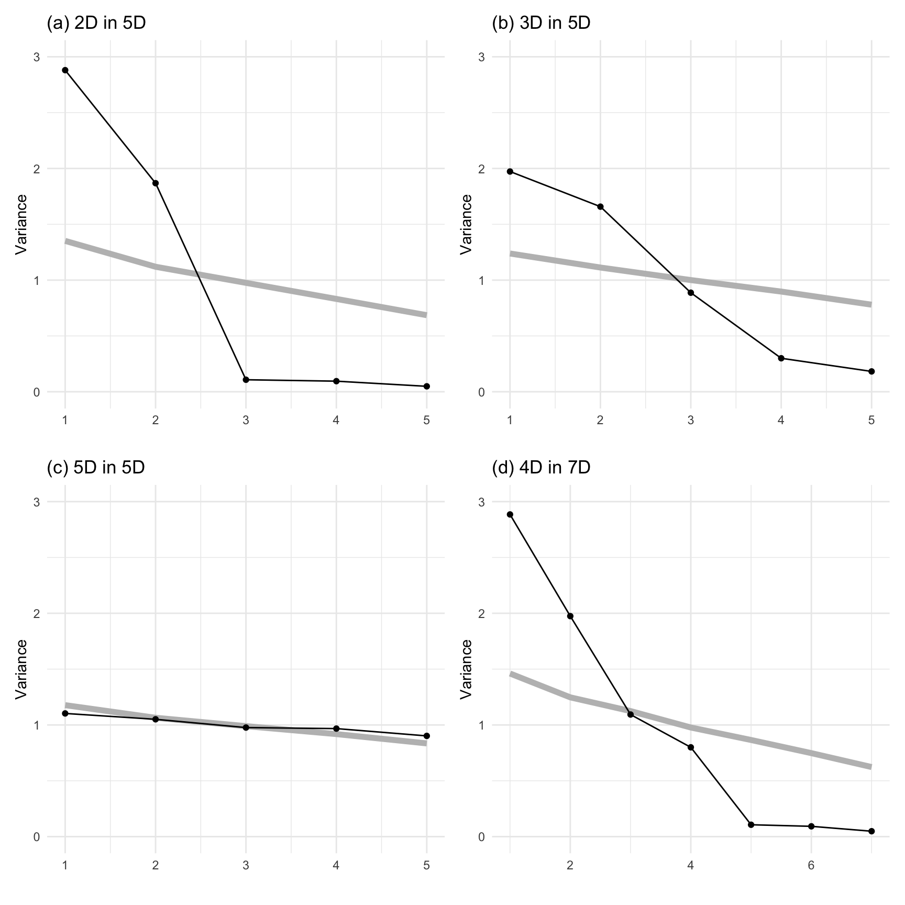
pn_pca$rotation[,1:4] |>
as_tibble(rownames="Variable") |>
gt() |>
fmt_number(columns = c(PC1, PC2, PC3, PC4),
decimals = 2)| Variable | PC1 | PC2 | PC3 | PC4 |
|---|---|---|---|---|
| x1 | 0.58 | 0.04 | 0.01 | 0.00 |
| x2 | −0.55 | −0.18 | −0.03 | 0.07 |
| x3 | 0.47 | 0.37 | 0.05 | −0.20 |
| x4 | 0.24 | −0.62 | −0.06 | 0.17 |
| x5 | −0.28 | 0.60 | 0.07 | −0.14 |
| x6 | 0.05 | 0.29 | −0.58 | 0.76 |
| x7 | −0.02 | −0.08 | −0.81 | −0.58 |
The pisa data contains simulated data from math, reading and science scores, totalling 30 variables. PCA is used here to examine the association. We might expect that it is 3D, but what we see suggests it is primarily 1D. This means that a student that scores well in math, will also score well in reading and science.
The scree plot in Figure 4.2 shows a big drop from one to two PCs in the amount of variance explained. From a grand tour on the 30 variables we can see that the data is elliptical in most projections, sometimes shrinking to be a small circle. This pattern strongly indicates that there is one primary direction of variation in the data, with only small variation in any direction away from it. Shrinking to the small circle is analogous to to how a pencil or cigar or water bottle in 3D looks from some angles.
animate_xy(pisa_std, half_range=1)render_gif(pisa_std,
grand_tour(),
display_xy(half_range=0.9),
gif_file="gifs/pisa_gt.gif",
frames=500,
width=400,
height=400,
loop=FALSE)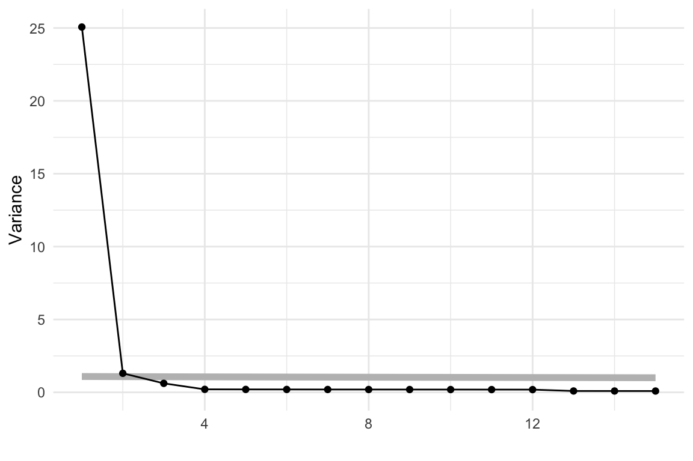
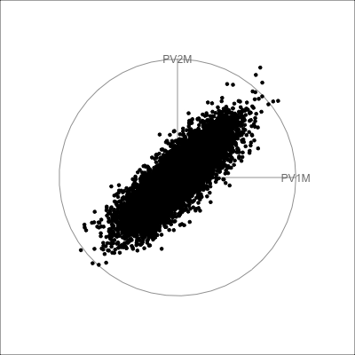
pisa data, with 30 variables being the plausible scores for Australian students. In combination, these suggest that the data is effectively 1D.
The coefficients of the first PC (first eigenvector) are roughly equal in magnitude (as shown below), which tells us that all variables roughly contribute. Interestingly, they are all negative, which is not actually meaningful. With different software these could easily have been all positive. The sign of the coefficients can be reversed, as long as all are reversed, which is the same as an arrow pointing one way, changing and pointing the other way.
round(pisa_pca$rotation[,1], 2) PV1MATH PV2MATH PV3MATH PV4MATH PV5MATH PV6MATH PV7MATH PV8MATH
-0.18 -0.18 -0.18 -0.18 -0.18 -0.18 -0.18 -0.18
PV9MATH PV10MATH PV1READ PV2READ PV3READ PV4READ PV5READ PV6READ
-0.18 -0.18 -0.18 -0.18 -0.19 -0.18 -0.19 -0.19
PV7READ PV8READ PV9READ PV10READ PV1SCIE PV2SCIE PV3SCIE PV4SCIE
-0.19 -0.19 -0.19 -0.19 -0.18 -0.19 -0.19 -0.18
PV5SCIE PV6SCIE PV7SCIE PV8SCIE PV9SCIE PV10SCIE
-0.18 -0.19 -0.19 -0.18 -0.19 -0.18 The tour verifies that the pisa data is primarily 1D, indicating that a student who scores well in math, probably scores well in reading and science, too. More interestingly, the regular shape of the data strongly indicates that it is “synthetic”, simulated rather than observed.
This data has player statistics for all the matches in the 2021 season of the Women’s Australian Football League. We would be interested to know which variables contain similar information, and thus might be combined into single variables. We would expect that many statistics group into a few small sets, such as offensive and defensive skills. We might also expect that some of the statistics are skewed, most players have low values and just a handful of players are stellar. It is also possible that there are some extreme values. These are interesting features, but they will distract from the main purpose of grouping the statistics. Thus the tour is used to check for potential problems with the data prior to conducting PCA.
We look at all of the 29 player statistics in a grand tour in Figure 4.3.
animate_xy(aflw_std[,7:35], half_range=0.9)
render_gif(aflw_std[,7:35],
grand_tour(),
display_xy(half_range=0.9),
gif_file="gifs/aflw_gt.gif",
frames=500,
loop=FALSE)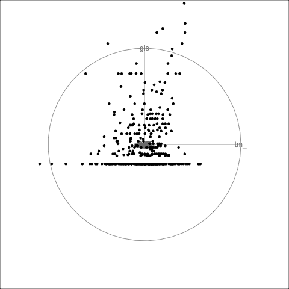
No major surprises! There is a small amount of skewness, and there are no major outliers. Skewness indicates that most players have reasonably similar skills (bunching of points), except for some key players (the moderate outliers). The skewness could be reduced by applying a log or square root transformation to some variables prior to running the PCA. However, we elect not to do this because the moderate outliers are of interest. These correspond to talented players that we’d like to explore further with the analysis.
Below we have the conventional summary of the PCA, a scree plot showing the reduction in variance to be explained when each additional PC is considered. It is also conventional to look at a table summarising the proportions of variance explained by PCs, but with almost 30 variables it is easier to make some decision on the number of PCs needed based on the scree plot.
aflw_pca <- prcomp(aflw_std[,7:35],
scale = FALSE,
retx=TRUE)
ggscree(aflw_pca, q = 29) + theme_minimal()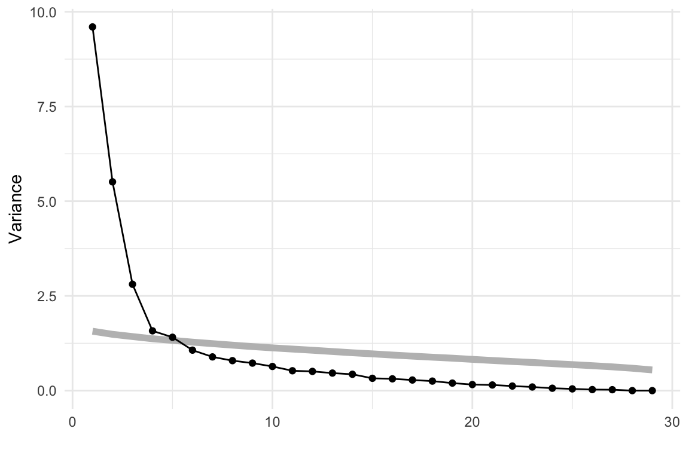
From the scree plot in Figure 4.4, we see a sharp drop from one to two, two to three and then smaller drops. After four PCs the variance drops again at six PCs and then gradually decays. We will choose four PCs to examine more closely. This explains 67.2% of the variance.
When there are as many variables as this, it can be hard to digest the combinations of variables most contributing to each PC. Rearranging the table by sorting on a selected PC can help. Table 4.4 has been sorted according to the PC 1 coefficients.
PC 1 is primarily composed of disposals, possessions, kicks, metres, uncontested, contested, …. primarily the field play statistics! It is quite common in PCA for the first PC to be a combination of all variables, which suggests that there is one main direction of variation in the data. Here it is not quite that. PCA suggests that the primary variation is through a combination of field skills, or basic football playing skills.
Thus the second PC contrasts the first, because it is primarily a combination of shots, goals, marks_in50, accuracy, and behinds contrasted against rebounds_in50 and intercepts. The positive coefficients are primary offensive skills and the negative coefficients are defensive skills. This PC is a reasonable measure of the offensive vs defensive skills of a player.
aflw_pca$rotation[,1:4] |>
as_tibble(rownames="Variable") |>
arrange(desc(PC1), desc(PC2), desc(PC3)) |>
gt() |>
fmt_number(columns = c(PC1, PC2, PC3, PC4),
decimals = 2)| Variable | PC1 | PC2 | PC3 | PC4 |
|---|---|---|---|---|
| disposals | 0.31 | 0.05 | 0.03 | −0.07 |
| possessions | 0.31 | 0.03 | 0.07 | −0.09 |
| kicks | 0.29 | 0.04 | −0.09 | 0.12 |
| metres | 0.28 | 0.03 | −0.10 | 0.15 |
| contested | 0.28 | −0.01 | 0.12 | −0.23 |
| uncontested | 0.28 | 0.06 | 0.01 | 0.05 |
| turnovers | 0.27 | 0.01 | 0.01 | 0.29 |
| clearances | 0.23 | 0.00 | 0.29 | −0.19 |
| clangers | 0.23 | 0.02 | 0.06 | 0.33 |
| handballs | 0.23 | 0.04 | 0.19 | −0.31 |
| frees_for | 0.21 | −0.02 | 0.13 | −0.18 |
| marks | 0.21 | −0.03 | −0.32 | −0.02 |
| tackles | 0.20 | −0.01 | 0.28 | −0.09 |
| time_pct | 0.16 | 0.04 | −0.35 | 0.02 |
| intercepts | 0.13 | 0.28 | −0.24 | −0.03 |
| rebounds_in50 | 0.13 | 0.28 | −0.24 | 0.06 |
| frees_against | 0.13 | −0.03 | 0.16 | 0.23 |
| assists | 0.09 | −0.23 | 0.00 | −0.05 |
| bounces | 0.09 | −0.03 | −0.02 | 0.28 |
| behinds | 0.09 | −0.32 | −0.08 | 0.02 |
| shots | 0.08 | −0.38 | −0.12 | 0.03 |
| tackles_in50 | 0.07 | −0.27 | 0.18 | −0.03 |
| marks_in50 | 0.06 | −0.34 | −0.18 | −0.04 |
| contested_marks | 0.05 | −0.16 | −0.34 | −0.15 |
| goals | 0.04 | −0.37 | −0.16 | −0.03 |
| accuracy | 0.04 | −0.34 | −0.10 | −0.06 |
| one_pct | 0.03 | 0.21 | −0.33 | −0.08 |
| disposal | 0.02 | 0.13 | −0.20 | −0.50 |
| hitouts | −0.04 | 0.00 | 0.03 | −0.32 |
We could continue to interpret each PC by examining large coefficients to help decide how many PCs are a suitable summary of the information in the data. Briefly, PC 3 is mixed but it is possibly a measure of worth of the player because time_pct has a large coefficient, so players that are on the field longer will contribute strongly to this new variable. It also has large (and opposite) contributions from clearances, tackles, contested_marks. PC 4 appears to be related to aggressive play with clangers, turnovers, bounces and frees_against featuring. All four PCs have useful information.
For deeper exploration, when we tour the four PCs, we’d like to be able to stop and identify players. This can be done by creating a pre-computed animation, with additional mouse-over, made using plotly. However, it is not size-efficient, and is only feasible with a small number of observations. This is because all of the animation frames, with the full projected data in each, are composed into a single object, which gets large very quickly.
The result is shown in Figure 4.5. We can see that the shape of the four PCs is similar to that of all the variables, bunching of points in the centre with a lot of moderate outliers.
set.seed(20)
b <- basis_random(4, 2)
aflw_pct <- tourr::save_history(aflw_pca$x[,1:4],
tour_path = grand_tour(),
start = b,
max_bases = 5)
# To reconstruct projected data plots, later
save(aflw_pct, file="data/aflw_pct.rda")
aflw_pcti <- interpolate(aflw_pct, 0.1)
aflw_anim <- render_anim(aflw_pca$x[,1:4],
frames=aflw_pcti,
obs_labels=paste0(aflw$surname,
aflw$given_name))
aflw_gp <- ggplot() +
geom_path(data=aflw_anim$circle,
aes(x=c1, y=c2,
frame=frame), linewidth=0.1) +
geom_segment(data=aflw_anim$axes,
aes(x=x1, y=y1,
xend=x2, yend=y2,
frame=frame),
linewidth=0.1) +
geom_text(data=aflw_anim$axes,
aes(x=x2, y=y2,
frame=frame,
label=axis_labels),
size=5) +
geom_point(data=aflw_anim$frames,
aes(x=P1, y=P2,
frame=frame,
label=obs_labels),
alpha=0.8) +
xlim(-1,1) + ylim(-1,1) +
coord_equal() +
theme_bw() +
theme(axis.text=element_blank(),
axis.title=element_blank(),
axis.ticks=element_blank(),
panel.grid=element_blank())
aflw_pctour <- ggplotly(aflw_gp,
width=500,
height=550) |>
animation_button(label="Go") |>
animation_slider(len=0.8, x=0.5,
xanchor="center") |>
animation_opts(easing="linear", transition = 0)
htmlwidgets::saveWidget(aflw_pctour,
file="html/aflw_pca.html",
selfcontained = TRUE)load("data/aflw_pct.rda")
aflw_pcti <- interpolate(aflw_pct, 0.1)
f18 <- matrix(aflw_pcti[,,18], ncol=2)
p18 <- render_proj(aflw_pca$x[,1:4], f18,
obs_labels=paste0(aflw$surname,
aflw$given_name))
pg18 <- ggplot() +
geom_path(data=p18$circle, aes(x=c1, y=c2)) +
geom_segment(data=p18$axes, aes(x=x1, y=y1, xend=x2, yend=y2)) +
geom_text(data=p18$axes, aes(x=x2, y=y2, label=rownames(p18$axes))) +
geom_point(data=p18$data_prj, aes(x=P1, y=P2, label=obs_labels)) +
xlim(-1,1) + ylim(-1, 1) +
#ggtitle("Frame 18") +
theme_bw() +
theme(
axis.text=element_blank(),
axis.title=element_blank(),
axis.ticks=element_blank(),
panel.grid=element_blank())ggplotly(pg18, width=500, height=500)For any particular frame, like 18 re-plotted in Figure 4.6, we can investigate further. Here there is a branching pattern, where the branch points in the direction of PC 1. Mouse-over the players at the tip of this branch and we find players like Alyce Parker, Brittany Bonnici, Dana Hooker, Kiara Bowers. If you look up the bios of these players you’ll find they all have generally good player descriptions like “elite disposals”, “powerful left foot”, “hard-running midfielder”, “best and fairest”.
In the direction of PC 2, you’ll find players like Lauren Ahrens, Stacey Livingstone who are star defenders. Players in this end of PC 2, have high scores on intercepts and rebounds_in50.
Another interesting frame for inspecting PC 2 is 59. PC 2 at one end has players with high goal scoring skills, and the other good defending skills. So mousing over the other end of PC 2 finds players like Gemma Houghton and Katie Brennan who are known for their goal scoring. The branch pattern is an interesting one, because it tells us there is some combination of skills that are lacking among all players, primarily this appears to be there some distinction between defenders skills and general playing skills. It’s not as simple as this because the branching is only visible when PC 1 and PC 2 are examined with PC 3.
PCA is useful for getting a sense of the variation in a high-dimensional data set. Interpreting the principal components is often useful, but it can be discombobulating. For the aflw data it would be good to think about it as a guide to the main directions of variation and to follow with a more direct engineering of variables into interesting player characteristics. For example, calculate offensive skill as an equal combination of goals, accuracy, shots, behinds. A set of new variables specifically computed to measure particular skills would make explaining an analysis easier.
The tour verifies that PCA on the aflw data is complicated and doesn’t capture all of the variation. However, it does provide useful insights. It detected outstanding players, and indicated the different skills sets of top goal scorers and top defensive players.
When you choose a smaller number of PCs \((k)\) than the number of original variables, this is essentially producing a model for the data. The model is the lower dimensional \(k\)-D space. It is analogous to a linear regression model, except that the residuals from the model are \((p-k)\)-D.
It is common to show the model, that is the data projected into the \(k\)-D model space. When \(k=2\) this is called a “biplot”. For the plane and plane_noise data the biplots are shown in Figure 4.7, as produced by the ggfortify package (Tang et al., 2016). This is useful for checking which variables contribute most to the new principal component variables, and also to check for any problems that might have affected the fit, such as outliers, clusters or non-linearity. Interestingly, biplots are typically only made in 2D, even if the data should be summarised by more than two PCs. Occasionally you will see the biplot made for PC \(j\) vs PC \(k\) also. With the pca_tour() function in the tourr package you can view a \(k\)-D biplot. This will display the \(k\) PCs with the axes displaying the original variables, and thus show their contribution to the PCs.
plane_pca <- prcomp(plane)
pl1 <- autoplot(plane_pca, loadings = TRUE,
loadings.label = TRUE) +
ggtitle("(a)") +
theme_minimal() +
theme(aspect.ratio=1)Warning: `aes_string()` was deprecated in ggplot2 3.0.0.
ℹ Please use tidy evaluation idioms with `aes()`.
ℹ See also `vignette("ggplot2-in-packages")` for more information.
ℹ The deprecated feature was likely used in the ggfortify package.
Please report the issue at <https://github.com/sinhrks/ggfortify/issues>.plane_noise_pca <- prcomp(plane_noise)
pl2 <- autoplot(plane_noise_pca, loadings = TRUE,
loadings.label = TRUE) +
ggtitle("(b)") +
theme_minimal() +
theme(aspect.ratio=1)
pl1 + pl2![Two scatterplots with black dots representing individual data points projected onto the first two principal components. Red arrows originate from the center and point outward, representing variable loadings. In plot (a), the x-axis is labeled PC1 (57.61%) and the y-axis is labeled PC2 (37.36%), indicating the proportion of variance explained by each component. In plot (b), PC1 accounts for 41.22% of the variance and PC2 for 28.21%. The red arrows are labeled X1 through X6, showing how variables contribute to the principal components.](4-pca_files/figure-html/fig-plane-biplot-1.png)
x1, x2 and x3 and PC2 is primarily x4 and x5. In (b) the same five variables contribute in almost the same way, with variables x6 and x7 contributing very little. The data was constructed this way, that these two dimensions were purely noise.
It can be useful to examine this model using the tour. The model is simply a plane in high dimensions. This would be considered to be the model in the data space. The reason to do this is to check how well the model fits the data. The plane corresponding to the model should be oriented along the main direction of the points, and the spread of points around the plane should be small. We should also be able to see if there has been any strong non-linear relationship missed by the model, or outliers and clusters.
The function pca_model() from the mulgar package can be used to represent the model as a \(k\)-D wire-frame plane. Figure 4.8 shows the models for the plane and box data, 2D and 3D respectively.
We look at the model in the data space to check how well the model fits the data. If it fits well, the points will cluster tightly around the model representation, with little spread in other directions.
plane_m <- pca_model(plane_pca)
plane_m_d <- rbind(plane_m$points, plane)
animate_xy(plane_m_d, edges=plane_m$edges,
axes="bottomleft",
edges.col="#E7950F",
edges.width=3)
render_gif(plane_m_d,
grand_tour(),
display_xy(half_range=0.9,
edges=plane_m$edges,
edges.col="#E7950F",
edges.width=3),
gif_file="gifs/plane_model.gif",
frames=500,
width=400,
height=400,
loop=FALSE)
box_pca <- prcomp(box)
box_m <- pca_model(box_pca, d=3)
box_m_d <- rbind(box_m$points, box)
animate_xy(box_m_d, edges=box_m$edges,
axes="bottomleft", edges.col="#E7950F", edges.width=3)
render_gif(box_m_d,
grand_tour(),
display_xy(half_range=0.9,
edges=box_m$edges,
edges.col="#E7950F",
edges.width=3),
gif_file="gifs/box_model.gif",
frames=500,
width=400,
height=400,
loop=FALSE)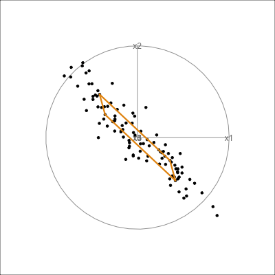
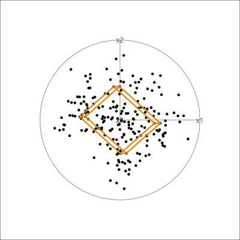
The model for the pisa data is a 1D vector, shown in Figure 4.9. In this example there is a good agreement between the model and the data.
pisa_model <- pca_model(pisa_pca, d=1, s=2)
pisa_all <- rbind(pisa_model$points, pisa_std)
animate_xy(pisa_all, edges=pisa_model$edges,
edges.col="#E7950F", edges.width=3)
render_gif(pisa_all,
grand_tour(),
display_xy(half_range=0.9,
edges=pisa_model$edges,
edges.col="#E7950F",
edges.width=5),
gif_file="gifs/pisa_model.gif",
frames=500,
width=400,
height=400,
loop=FALSE)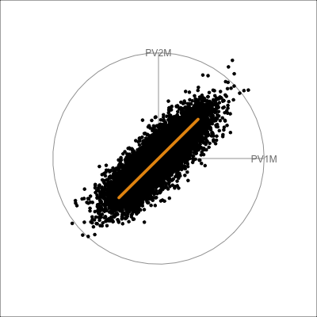
pisa data. The 1D model captures the primary variation in the data and there is a small amount of spread in all directions away from the model.
The pisa data fits fairly closely to the 1D PCA model. The variance of points away from the model is symmetric and relatively small. These suggest the 1D model is a reasonable summary of the test scores.
It is less useful to examine the PCA model for the aflw data, because the main patterns that were of interest were the exceptional players. However, we will do it anyway! Figure 4.10 shows the 4D PCA model overlain on the data. Even though the distribution of points is not as symmetric and balanced as the other examples, we can see that the cube structure mirrors the variation. We can see that the relationships between variables are not strictly linear, because the spread extends unevenly away from the box.
aflw_model <- pca_model(aflw_pca, d=4, s=1)
aflw_all <- rbind(aflw_model$points, aflw_std[,7:35])
animate_xy(aflw_all, edges=aflw_model$edges,
edges.col="#E7950F",
edges.width=3,
half_range=0.8,
axes="off")
render_gif(aflw_all,
grand_tour(),
display_xy(half_range=0.8,
edges=aflw_model$edges,
edges.col="#E7950F",
edges.width=3,
axes="off"),
gif_file="gifs/aflw_model.gif",
frames=500,
width=400,
height=400,
loop=FALSE)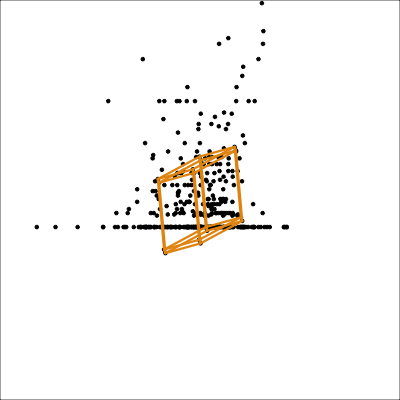
aflw data. The linear model is not ideal for this data, which has other patterns like outliers, and some branching. However, the model roughly captures the linear associations, and leaves unexplained and unequal variation in different directions.
From the tour we see that the 4D model leaves substantial variation unexplained. It is also not symmetric, and there is some larger variation away from the model in some combinations of variables than others.
Figure 4.11 shows the scree plot for the planar data with noise and outliers. It is very similar to the scree plot on the data without the outliers (Figure 4.1 (d)). However, what we see from Figure 4.12 is that PCA loses the outliers. The animation in (a) shows the full data, and the outliers marked by colour and labels 1, 2, are clearly unusual in some projections. When we examine the tour of the first four PCs (as suggested by the scree plot) the outliers are not unusual. They are almost contained in the point cloud. The reason is clear when all the PCs are plotted in a scatterplot matrix as shown in Figure 4.13, and the outliers can be seen to be clearly detected only in PC5, PC6 and PC7.
plane_n_o_pca <- prcomp(plane_noise_outliers)
ggscree(plane_n_o_pca, q = 7) + theme_minimal()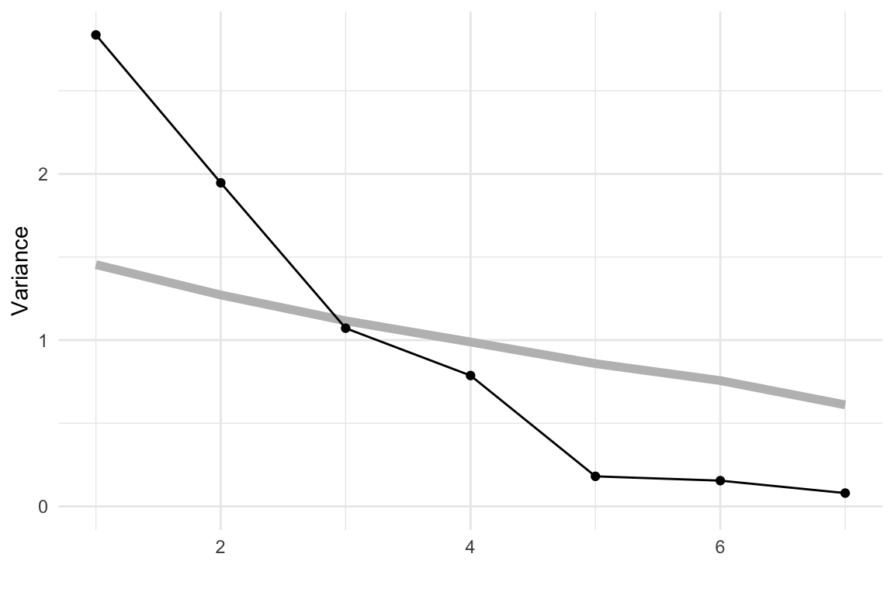
clrs <- hcl.colors(12, "Zissou 1")
p_col <- c(rep("black", 100), clrs[11], clrs[11])
p_obs_labels <- c(rep("", 100), "1", "2")
animate_xy(plane_n_o_pca$x[,1:4],
col=p_col,
obs_labels=p_obs_labels)
animate_xy(plane_noise_outliers,
col=p_col,
obs_labels=p_obs_labels)
set.seed(446)
render_gif(plane_noise_outliers,
grand_tour(),
display_xy(half_range=4,
col=p_col,
obs_labels=p_obs_labels),
gif_file="gifs/plane_n_o_clr.gif",
frames=500,
width=400,
height=400,
loop=FALSE)
set.seed(446)
render_gif(plane_n_o_pca$x[,1:4],
grand_tour(),
display_xy(half_range=1,
col=p_col,
obs_labels=p_obs_labels),
rescale = TRUE,
gif_file="gifs/plane_n_o_pca.gif",
frames=500,
width=400,
height=400,
loop=FALSE)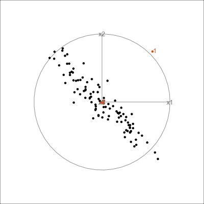
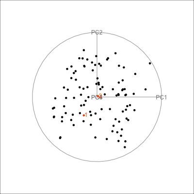
ggscatmat(plane_n_o_pca$x) + theme_minimal() +
theme(axis.title = element_blank(),
axis.text = element_blank())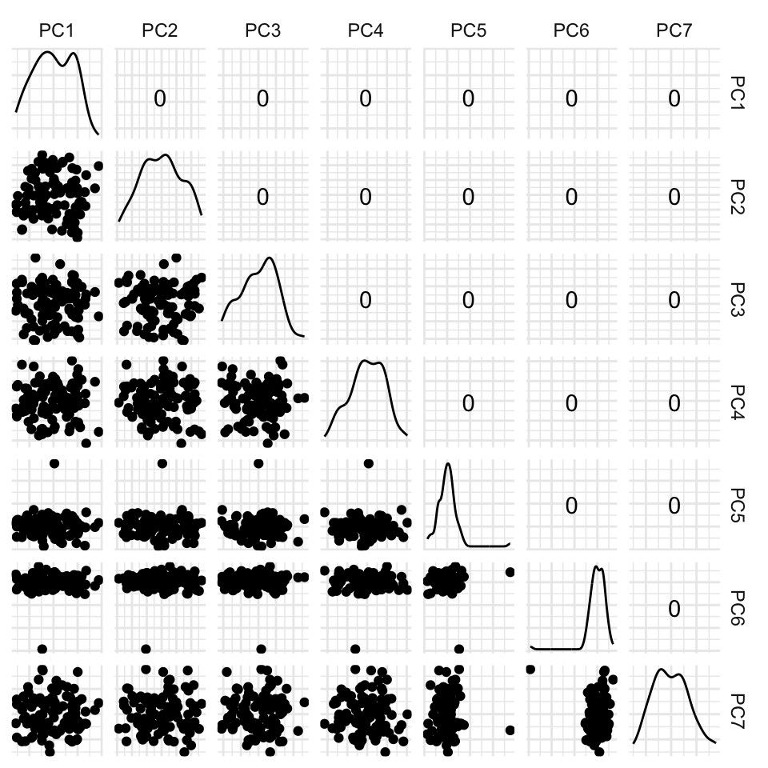
Figure 4.15 shows the tour of the full 5D data containing non-linear relationships in comparison with a tour of the first three PCs, as recommended by the scree plot (Figure 4.14). The PCs capture some clear and very clean non-linear relationship, but it looks like it has missed some of the complexities of the relationships. The scatterplot matrix of all 5 PCs (Figure 4.16) shows that PC4 and PC5 contain interesting features: more non-linearity, and curiously an outlier.
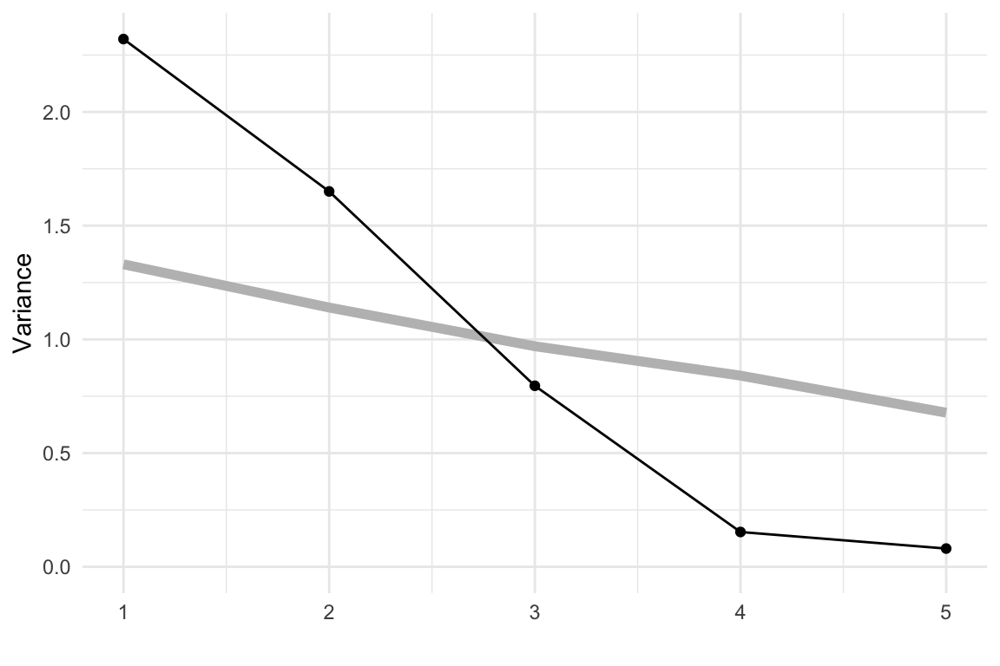
animate_xy(plane_nonlin_pca$x[,1:3])
set.seed(506)
render_gif(plane_nonlin_pca$x[,1:3],
grand_tour(),
display_xy(half_range=4.5),
gif_file="gifs/plane_nonlin_pca.gif",
frames=500,
width=400,
height=400)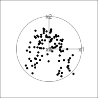
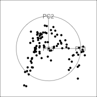
ggscatmat(plane_nonlin_pca$x) +
theme_minimal() +
theme(axis.title = element_blank(),
axis.text = element_blank())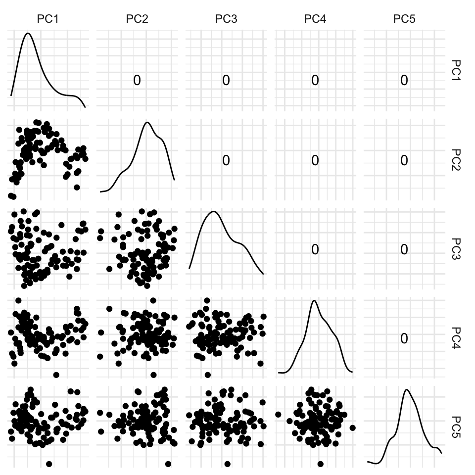
One of the dangers of PCA is that interesting and curious details of the data can be captured by the lowest PCs, that are usually discarded. The tour, and examining the smaller PCs, can help to discover them.
aflw data.
aflw data. Is the branch pattern visible in any pair?aflw variables that have skewed distributions using a log or square root transformation. Then re-do the PCA. What do we learn that is different about associations between the skill variables?bushfires data.
cause (class) variable. Note any issues such as outliers, or skewness that might affect PCA.pca_tour to examine the first five PCs of the bushfires data. How do all of the variables contribute to this reduced space?sketches_train data to 12 PCs. How much variation does this explain? Is there any obvious clustering in this lower dimensional space?anomaly data sets. Check if the anomaly is visible in the first \(k\) PCs, where \(k\) is determined by usual methods such as the scree plot, using a tour. If it is not, find which PC it falls in, if any.multicluster data. How many PCs would be recommended by the scree plot? From the tour, what is not visible in this set, and how many more would you need to add to better see it?Linear dimension reduction can optimise for other criteria, and here we will explore one example: the algorithm described in Kandanaarachchi & Hyndman (2021) and implemented in the dobin package (Kandanaarachchi, 2022) finds a basis in which the first few directions are optimized for the detection of outliers in the data. We will examine how it performs for the plane_noise_outliers data (the example where outliers were hidden in the first four principal components.)
dobin::dobin. How many parameters does the method depend on?plane_noise_outliers data using default values for all parameters.dobin, using color to highlight the outliers. Are they visible as outliers with three components?frac parameter of the dobin function to frac = 0.99 and repeat the graphical evaluation from point 3. How does it compare to the previous solution?